RISD Museum K–12 Guidebook
A self-guided museum handbook for K–12 visitors and families — editorial layout, illustration, cover design and print production.
- Client
- RISD Museum — Mariani Lefas-Tetenes
- Team
- Design: Agnes Liu · Content: Claire Meagher
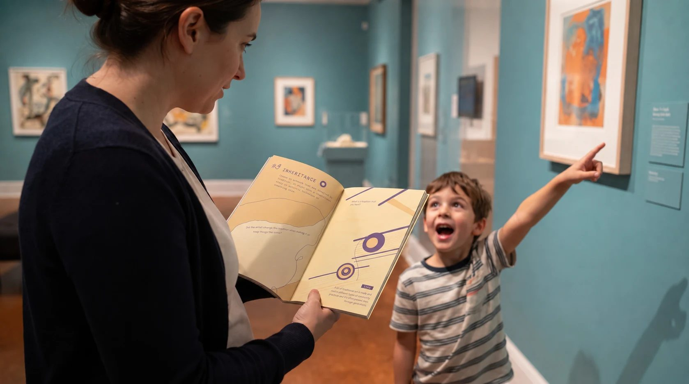
About
Using educational content written by Claire Meagher, I designed a self-guided K–12 museum handbook — editorial layout, typography, illustrations, cover design, binding and prepress production.
5,000 copies were produced for gallery guidance and weekly teaching programs serving about 200 K–12 students, visiting families and local schools.
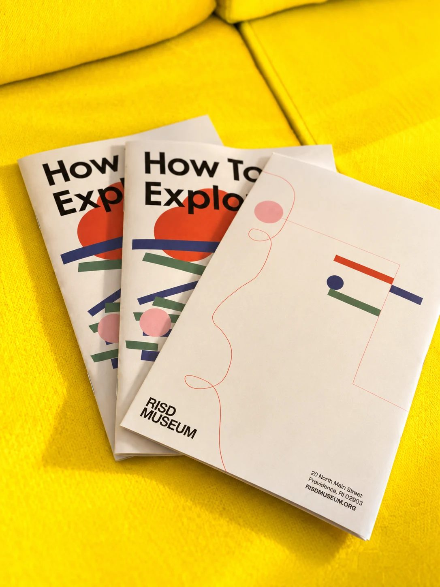
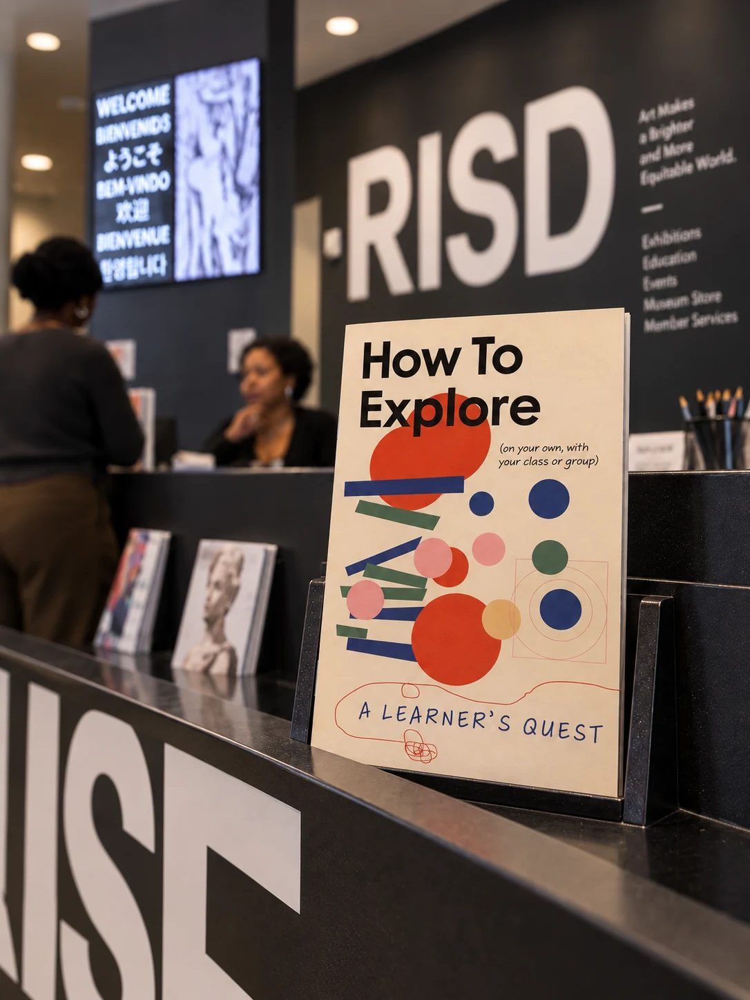
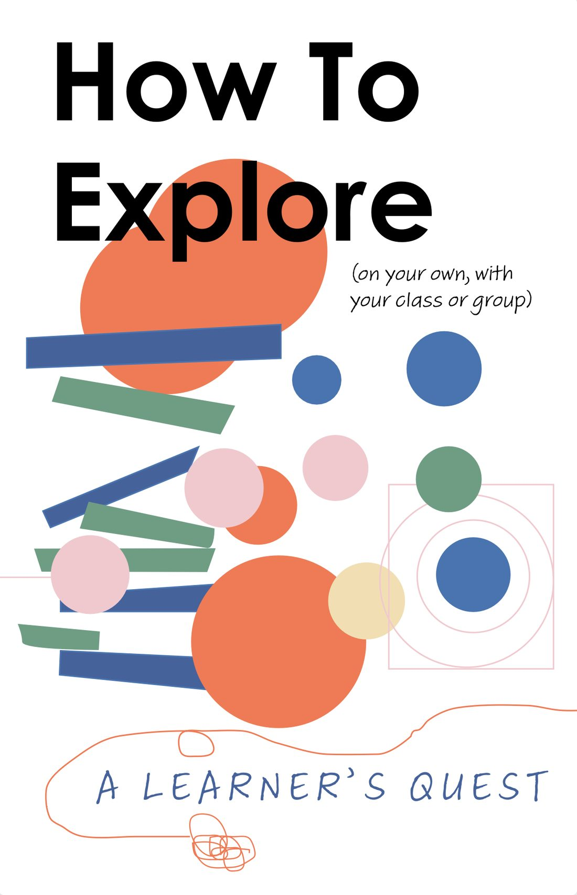
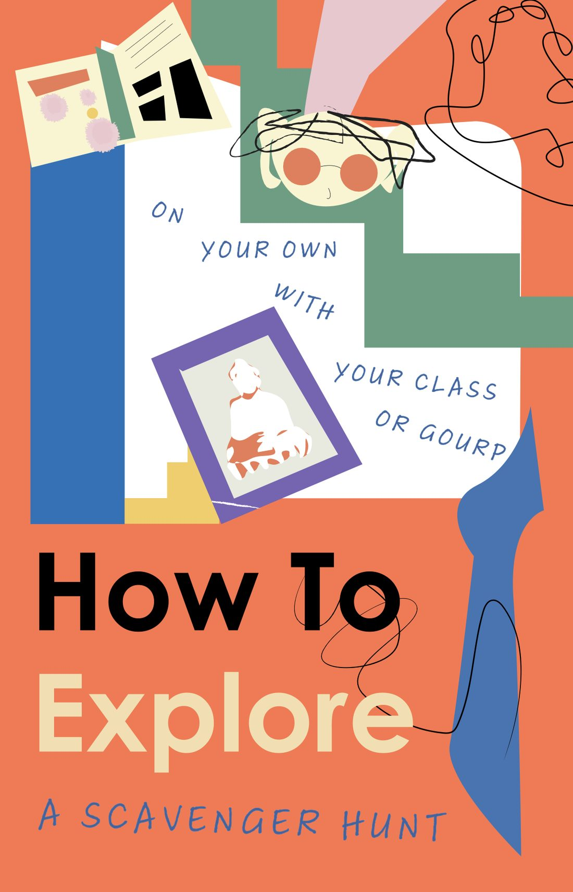
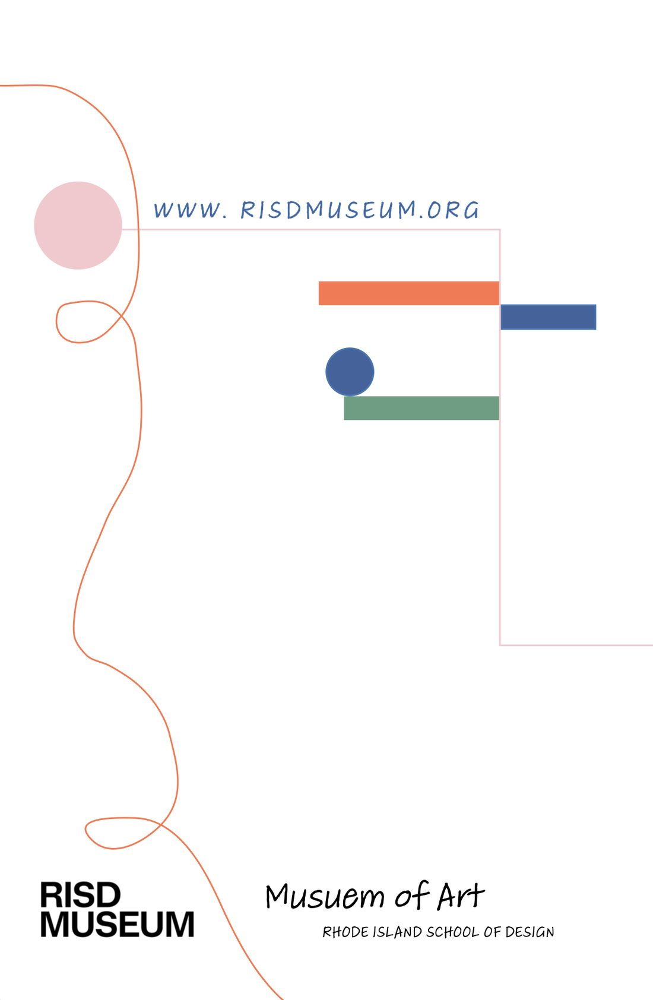
Inside the book
Bright geometric shapes, hand-drawn lines and generous writing space invite students to look closely, draw and respond — the book works as a guide and as a sketchbook.
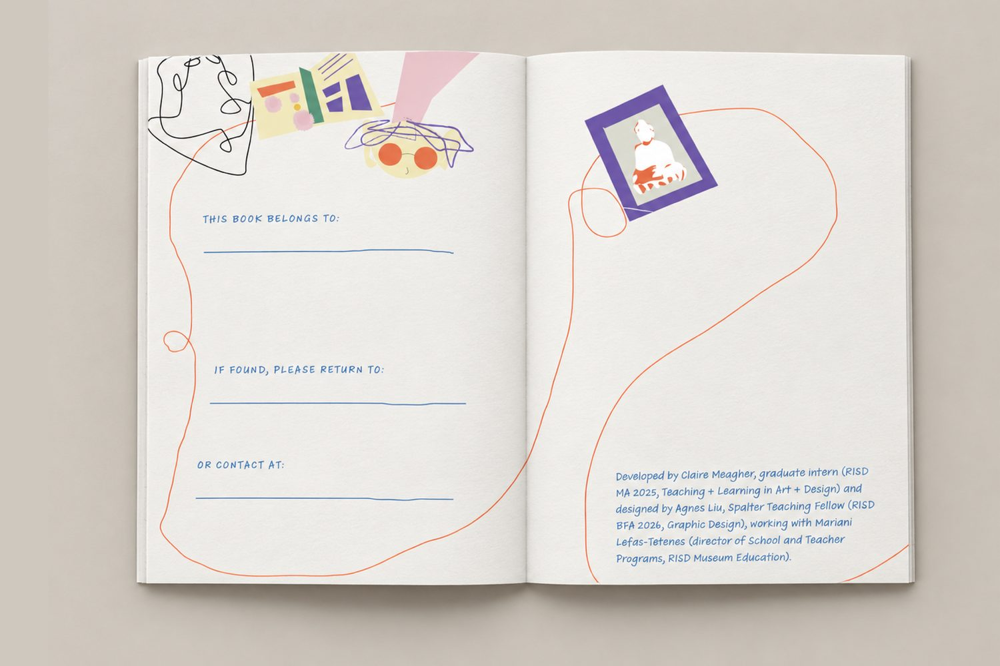
From the gallery to the page
Each prompt starts from something real in the museum. Here the book page sits on the left and the artwork or gallery moment that inspired it on the right — so students can see what to look for before they walk in.
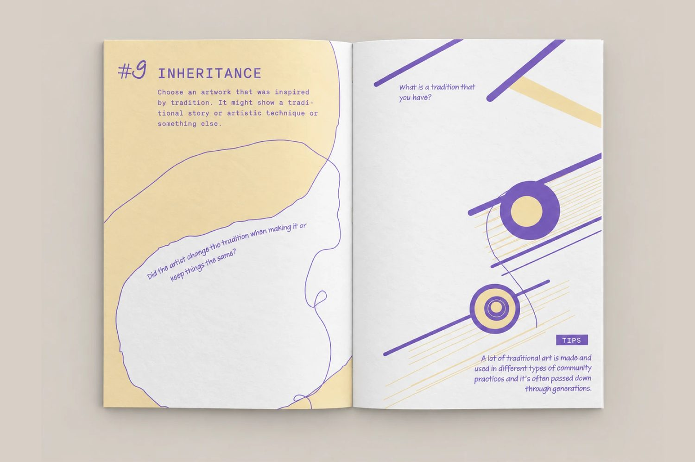
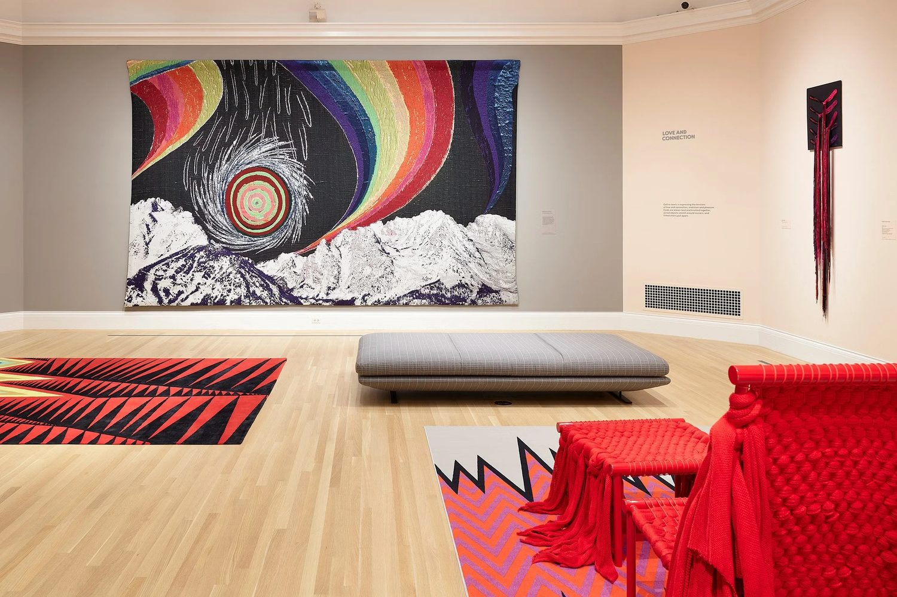
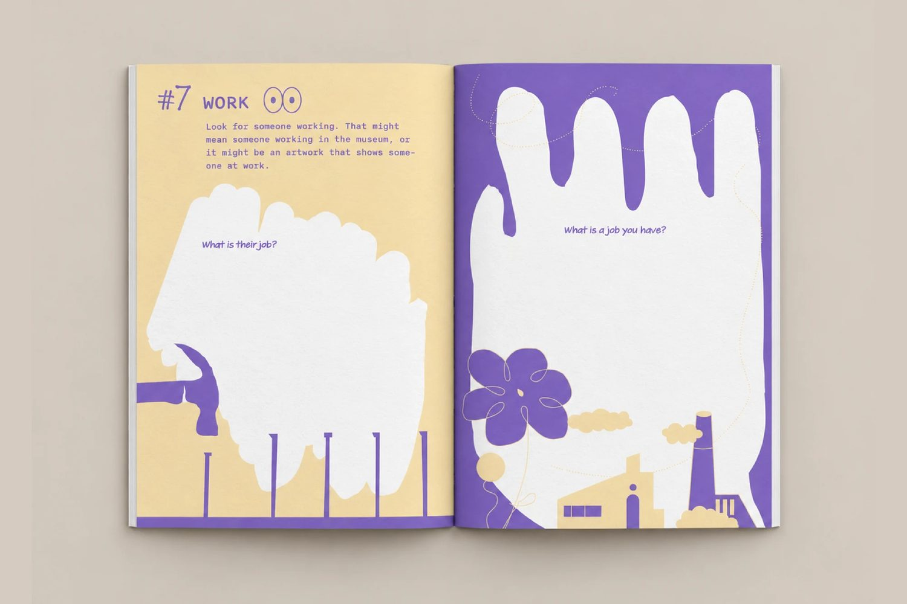
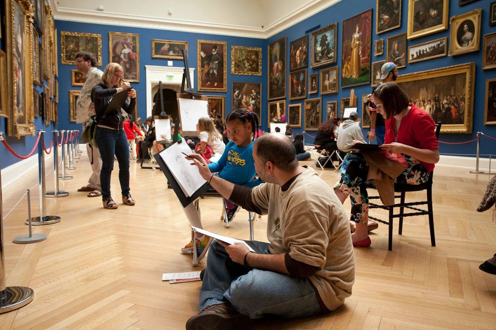
Worksheets and teaching
After teaching several lessons, I illustrated and designed a series of worksheets to give students more helpful and engaging ways to explore artworks and take part in K–12 museum activities — I see, I think, I wonder; compare and contrast; and drawing prompts.
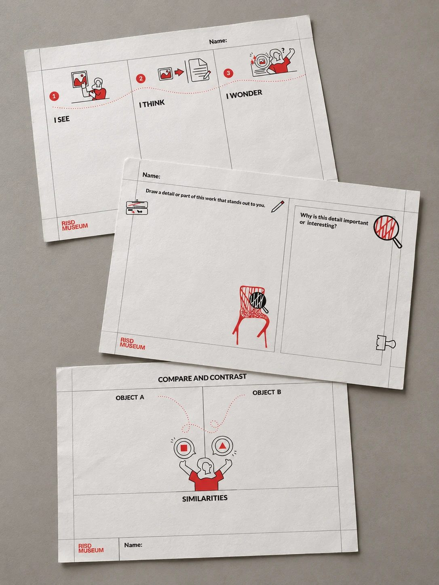
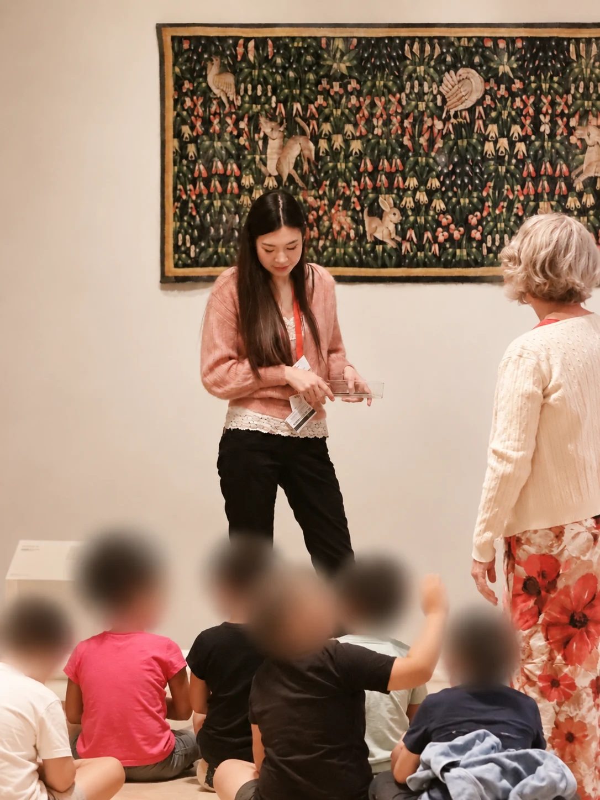
Next project
Echoes. Pattern. Paths.
Data posters and an NFC poetry book
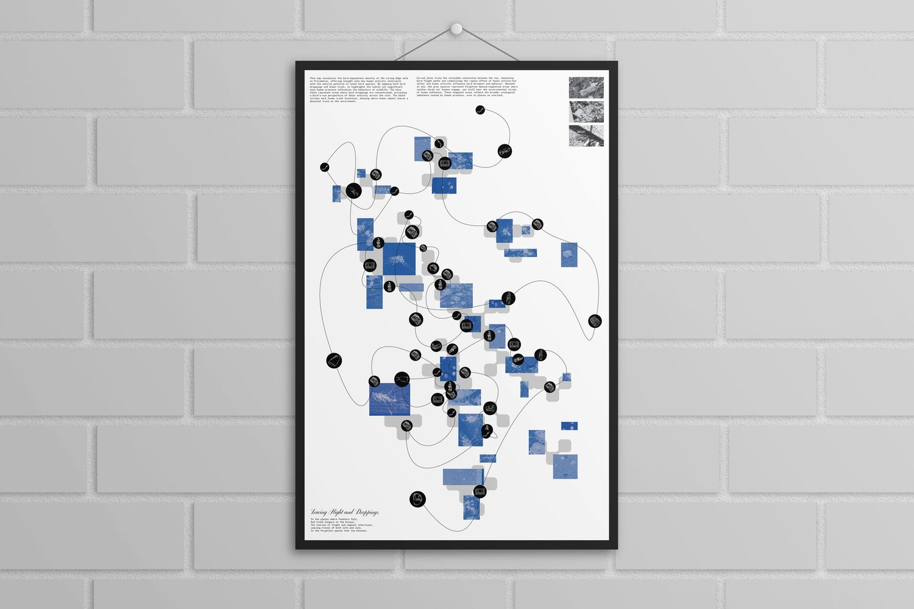